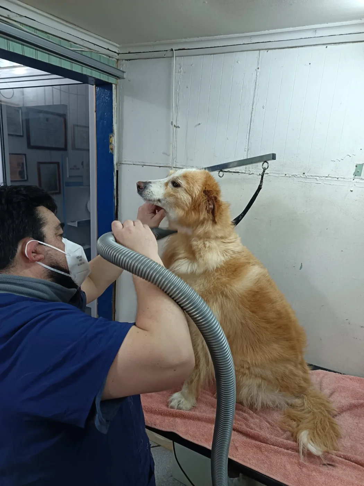
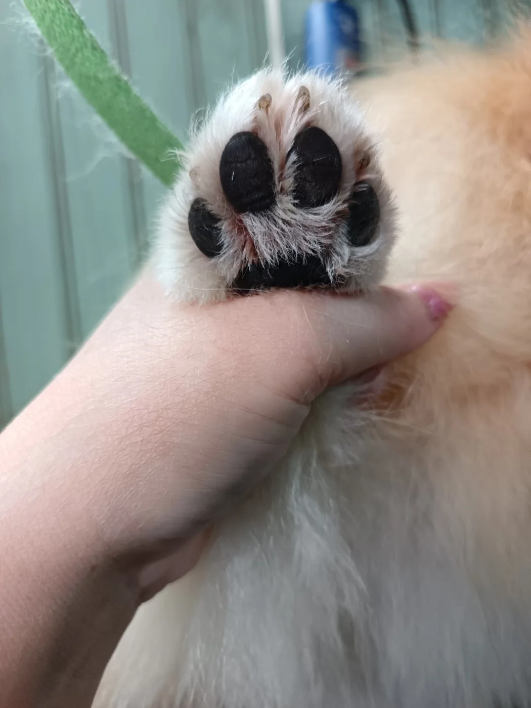
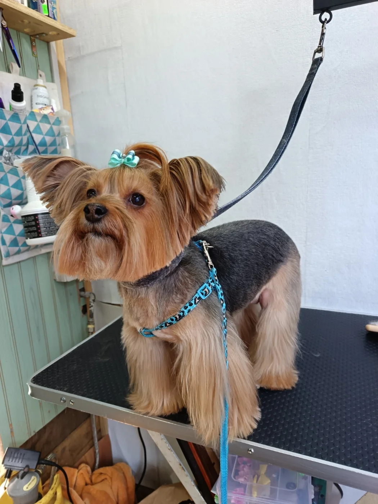
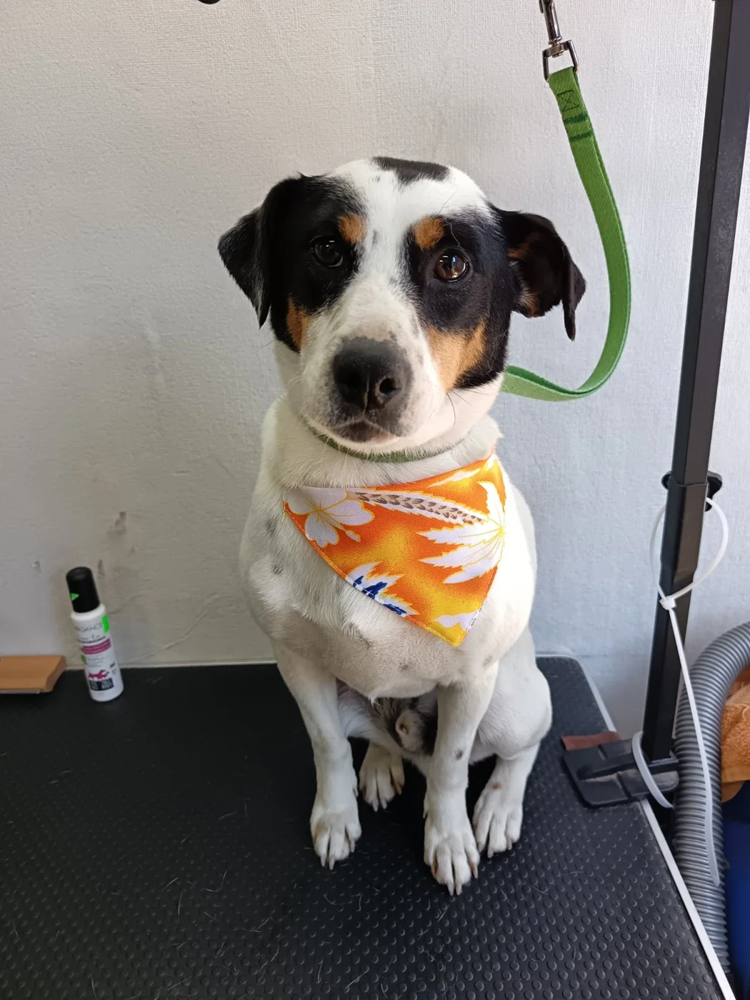
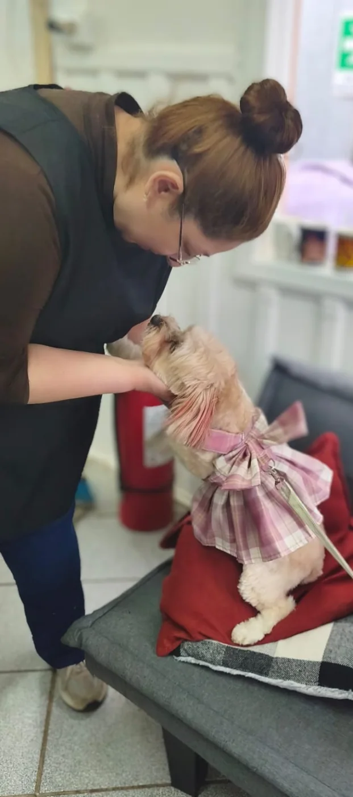

Peluquería canina · Coyhaique
Higiene
es salud.
Cuidado profesional, respetuoso y personalizado para cada etapa de su vida.
Conversemos sobre tu perro →
17 añosde experiencia profesional
Desde 2021en Coyhaique
Cuidado realcon respeto y atención
Nuestra forma de cuidar
Importa cómo queda. Y cómo lo cuidamos.

Paciencia en cada etapa
Atención a los detalles
Resultados auténticosServicios
Su cuidado, a su manera.
Porque cada perro tiene necesidades distintas.



Acompañamiento
Los perros bien cuidados tienen rutinas.
Organizamos su cuidado periódico, conocemos su historia y adaptamos cada atención a lo que necesita.
Quiero conocer la mantención continua →Pituquitos Pet
Más que baño y corte. Mucho más.
17 años de oficio, atención personalizada y un espacio de trabajo que puedes conocer.
Hablemos de su cuidado →
Coyhaique · Región de Aysén
¿Comenzamos su rutina?
Cuéntanos sobre tu perro y te orientaremos sobre la atención que necesita.
Encuéntranos
Visítanos en Coyhaique
Riquelme 221
Coyhaique · Región de Aysén